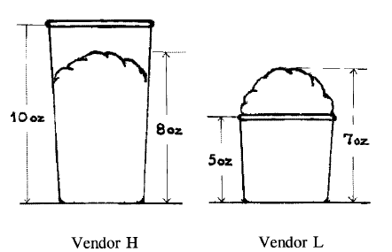

Вы здесь
Главные вкладки
Способность к оценке (и недорогой шоппинг в выходные)
В связи с надвигающимися праздниками многим читателям в голову приходит следующий вопрос:
«Дорогой Overcoming Bias, есть ли искажения, которые позволят мне выглядеть щедрым, при этом не тратя много денег?»
Я рад сказать, что да, таковые существуют! Согласно Ши (1998) — в статье, озаглавленной «Меньше — это лучше: когда выбор с низкой ценой ценится выше выбора с высокой ценой» — если вы покупаете кому-либо шарф за 45 долларов, то вы скорее будете выглядеть щедрым, нежели купите пальто за 55 долларов.
Это частный случай более общего явления. В ранее проведенном эксперименте Ши опрашивал испытуемых, как много они бы заплатили за подержанный музыкальный словарь:
Словарь А, 1993 года издания, содержащий 10000 записей, совсем как новый.
Словарь Б, 1993 года издания, содержащий 20000 записей, с порванной обложкой, но в остальном как новый.
Некоторым испытуемым давали сравнить оба словаря, а некоторым давали только один.
Те, кто видел только один из словарей, были готовы заплатить в среднем 24 доллара за словарь А и 20 долларов за словарь Б. Те же, кому давали оба словаря, были готовы заплатить за словарь Б в среднем 27 долларов, а за словарь А — 19 долларов.
Конечно же число записей в словаре куда важнее, нежели порванная обложка, по крайней мере если вы планируете использовать словарь по назначению. Однако если у вас в руках только один словарь с 20000 записями, это число вам особо ничего не говорит. Это много? Мало? Кто знает? Это не поддается анализу. В то же время порванную обложку видно сразу. И это имеет определенную аффективную валентность, а именно — плохо.
Если же у вас на руках оба словаря, то число записей становится величиной, которую можно оценить, поскольку есть уже две сущности, которые можно сравнить между собой. И как только число записей становится оцениваемой величиной, она нивелирует значимость порванной обложки.
Из Slovic et. al. (2002): что вы предпочтете:
-
29/36 шанс выиграть 2 доллара
-
7/36 шанс выиграть 9 долларов
В то время как средние цены (значения оценки) соответственно равны 1,25 доллара и 2,11 доллара, их средняя привлекательность составляла 13,2 и 7,5 соответственно. Цены и привлекательность устанавливались в контексте, в котором испытуемым говорили, что две игры будут выбираться из вышеприведенных и они должны играть в игру с более высокой ценой или более высокой привлекательностью. (У испытуемых был мотив отмечать игры как более привлекательные или платить за них больше, нежели они на самом деле предпочитали играть.)
Игра, стоящая больше денег, менее привлекательна, классический разворот предпочтений. Исследователи предположили что долларовые значения были более сравнимы с ценовой задачей, однако вероятность выигрыша была больше сравнима с привлекательностью. Так что (как думали исследователи) почему не попробовать сделать выигрыш в игру более заметным эмоционально — более аффективно оцениваемым — более привлекательным?
И как же они это сделали? Добавили в игру небольшой проигрыш. Старая игра имела 7/36 шанс выиграть 9 долларов, новая — 7/36 выиграть 9 долларов и 29/36 шанс проиграть 5 центов. В старой игре вы неявно оценивали привлекательность в 9 долларов. Новая игра заставляет вас оценивать привлекательность выигрыша 9 долларов против потери 5 центов.
Словик утверждает что результаты превзошли их ожидания. В новом эксперименте новая игра с 7/36 шансом выиграть 9 долларов имела привлекательность 9,4, в то же время сложная игра, в которой был добавлен 29/36 шанс потерять 5 центов имела средний рейтинг привлекательности в 14,9.
Дальнейшие проводимые эксперименты должны были показать, предпочитают ли испытуемые старую игру с определенным выигрышем в 2 доллара. Только 33 % студентов предпочли старую игру. Среди другой группы, которую просили выбрать между определенным выигрышем 2 долларов и новой игрой (в которую добавили возможность проигрыша), около 60,8 % предпочли ее. Обобщая все, можно сказать, что 9 долларов не особо привлекательная сумма денег, однако соотношение девяти долларов к пяти центам — удивительно привлекательное соотношение выигрыша к проигрышу.
Вы можете сделать игру привлекательней, если добавите в нее возможность явного проигрыша! Разве психология не интересна? Вот почему нет никого, кто на самом деле разбирается в чудесной сложности человеческого интеллекта и хочет при этом разработать ИИ похожий на человека.
Конечно же это все работает только если испытуемые не сравнивают две игры напрямую.
Примерно так же — какое из этих двух мороженых, по вашему мнению, выбрали бы испытуемые из вышеприведенного эксперимента?

Естественно, ответ зависит от того, видит ли испытуемый единичное мороженое или оба стоят рядом, чтобы их можно было сравнить. Испытуемые, которые видят перед собой только одно мороженое, готовы заплатить 1,66 доллара за стаканчик Н и 2,26 доллара за стаканчик L. Те же, кто видят сразу оба стаканчика, склонны заплатить 1,85 за стаканчик Н и 1,56 за стаканчик L.
Каким образом это относится к вашему праздничному шоппингу? Таким, что если вы тратите 400 долларов на 16 Гб айпод, тот, кому вы делаете подарок, увидит один из наиболее дорогих плееров. Если же вы тратите те же 400 долларов на Нинтендо Wii, тот, кому вы его дарите, увидит одну из наиболее дешевых приставок. Каково лучшее приложение для денег? Да, но этот вопрос имеет значение только когда вы видите оба товара вместе. Вы можете сравнить их во время шоппинга, а тот, кому делается подарок, увидит только то, что вы подарите.
Если вы ограничены определенной суммой — и ваша цель это показать вашу дружбу, а не помочь на самом деле, — то для вас будет лучше осознанно не гнаться за ценой. Решите, как много вы можете потратить, чтобы впечатлить реципиента, а потом найдите наиболее пустяковую вещь, которая стоит именно столько. Чем дешевле класс объектов, тем дороже может быть сам купленный объект, при том, что сумма тратится одна и та же. Что больше запомнится — футболка за 25 долларов или свеча за эту же сумму?
Теперь японский обычай с покупкой дыни за 50 долларов обрел смысл, не так ли? Вы смотрите на это и думаете «Да что это с японцами?». А они получают возможность казаться невероятно щедрыми, потратив только 50 долларов. Вы можете потратить 200 долларов на торжественный ужин, и при этом не произведете впечатления столь же богатого человека, как если бы купили дыню за 50 долларов. А если бы существовал обычай дарить зубочистки за 25 долларов или пылинки за 10 долларов, то можно было бы казаться щедрым, тратя еще меньше.
P.S.: Если вы на самом деле использовали этот трюк, то мне хотелось бы знать — что вы купили?
- Короткая ссылка сюда: lesswrong.ru/110